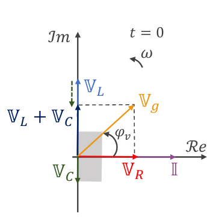
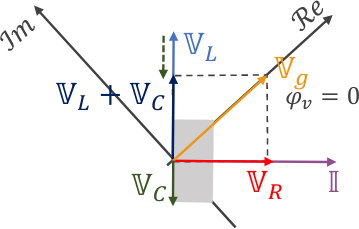

Circuitos que tienen un generador, que hace variar la tensión constantemente del circuito, y por ende la corriente. Los que estudiamos son senoidales/cosenoidales.
Valor eficaz de la tensión que depende del tiempo.
\begin{align} F_{eficaz} = \sqrt{< f^2(t) >} = \sqrt{\int_0^T f^2(t)dt \over \int_0^T dt} = \sqrt{\frac 1T \int_0^T f^2(t)dt} \end{align}Para funciones seoidales: \(f(t) = F_0 sen(wt + \varphi)\)
\begin{align} F_{eficaz} = \frac{1}{\sqrt{2}} F_0 \\ \sqrt{2}F_{eficaz} = F_0 \\ \end{align}Red domiciliaria argentina: \(V_{eficaz} = 220V \implies V_0 = \sqrt{2} \cdot 220V \approx 311 V\)
Todas las mallas y problemas con circuitos pueden ser resueltos como antes, pero siendo \(i(t), v(t), ...\) dependientes del tiempo, por lo que cada malla termina siendo una ed. Es más fácil resolver con el metodo fasorial.
Cada circuito lo planteamos como \(\Bbb V_g - \Bbb I \Bbb Z_{eq} = 0\). Siendo esta una ecuación compleja, donde hay que igualar módulo y argumento.
Reactancias:
- Inductiva \(X_L = \omega L\)
- Capacitiva \(X_C = \frac{1}{\omega C}\)
El circuito es capacitivo cuando \(X_C > X_L\) e inductivo cuando \(X_L > X_C\)
Impedancias de los elementos del circuito:
- \(\Bbb Z_R = R\)
-
\(\Bbb Z_L = j X_L\)
- \(X_L = \omega L\)
- \(\Bbb Z_M = j X_M\)
-
\(\Bbb Z_C = -j X_C\)
- \(X_C = \frac{1}{\omega C}\)
Cuando aparecen varios inductores es más fácil buscar el \(L_{eq}\).
La caida de potencial de cada elemento del circuito en forma fasorial es \(\Bbb V_i = \Bbb I \Bbb Z_i\)
- \(\Bbb V_i = \Bbb I \Bbb Z_R = \Bbb I R\)
- \(\Bbb V_Lf = \Bbb I \Bbb Z_L = \Bbb I \omega L\)
- \(\Bbb V_C = \Bbb I \Bbb Z_C = \Bbb I \frac{1}{\omega C}\)
Planteo de pseudo-ley de mallas para un circuito con resistor, capacitor e inductor, con un generador de corriente alterna \(v_g(t)= V_0 sin(\omega t + \varphi_v)\):
\begin{align} \Bbb V_g - \Bbb I \Bbb Z_R - \Bbb I \Bbb Z_L - \Bbb I \Bbb Z_C = 0 \\ \Bbb V_g - \Bbb I \Bbb Z_{eq} = 0 \end{align}Descompongo el \(\Bbb Z_{eq}\) en su parte módulo y argumento.
\begin{align} \Bbb Z_{eq} = R + j X_L + (-j X_C) = R + j(\omega L - \frac{1}{\omega C}) \\ \vert \Bbb Z_{eq} \vert = \sqrt{R^2 + (\omega L - \frac{1}{\omega C})^2} \\ \varphi_{eq} = arctan \left( \frac{\omega L - \frac{1}{\omega C}}{R} \right) \\ \end{align}Encuentro a que es equivalente \(\Bbb I\)
\begin{align} \Bbb I &= {\Bbb V_g \over \Bbb Z_{eq}}\\ \Bbb I &= {|\Bbb V_g| e^{j(\omega t + \varphi_v)} \over |\Bbb Z_{eq}| e^{j(\omega t + \varphi_{Z_{eq}})} }\\ \Bbb I &= {|\Bbb V_g| \over |\Bbb Z_{eq}|} e^{j(\omega t + \varphi_{v} - \varphi_{Z_{eq}})}\\ \end{align}Tengo dos ecuaciones, una para el módulo y otra para el argumento.
\begin{cases} |\Bbb I| = {|\Bbb V_g| \over |\Bbb Z_{eq}|}\\ \varphi_i + \omega t = \omega t + \varphi_{v} - \varphi_{Z_{eq}} \implies \varphi_{i} = \varphi_{v} - \varphi_{Z_{eq}}\\ \\ \end{cases}Escribo \(\Bbb I\) normal, con su dependencia temporal.
\begin{align} i(t) = |\Bbb I| sin(\omega t + \varphi_{i}) \\ i(t) = {|\Bbb V_g| \over |\Bbb Z_{eq}|} sin(\omega t + \varphi_{v} - \varphi_{Z_{eq}}) \\ \end{align}Si \(v(t)\) es \(sin\) entonces para \(i(t)\) es \(sin\). Caso contrario \(cos\) pongo \(cos\).
obs: \(I_{ef} = {|\Bbb V_g| \over |\Bbb Z_{eq}|} \frac{1}{\sqrt{2}}\)
- Elegir \(\varphi_i = 0\) (a menos que sea dato directo o indirecto del problema) y dibujar \(\Bbb I\) sobre el eje real.
- Dibujar \(\Bbb V_R\) en fase con \(\Bbb I\)
- Dibujar \(\Bbb V_L\) 90° adelantado respecto de \(\Bbb I\)(es decir, a 90° en sentido antihorario). Usar la misma escala para \(\Bbb V_L\) que para \(\Bbb V_R\)
- Dibujar \(\Bbb V_C\) 90° atrasado respecto de \(\Bbb I\) (es decir, a -90° en sentido antihorario). Usar la misma escala para \(\Bbb V_C\) que para \(\Bbb V_R\) y \(\Bbb V_L\)
- Dibujar la resultante \(\Bbb V_L + \Bbb V_C\)
- Dibujar \(\Bbb V_g\) por la Regla del Paralelogramo: debe ser la resultante de la suma vectorial de \(\Bbb V_R\) y \(\Bbb V_L + \Bbb V_C\)
- Revisar que \(\vert \Bbb V_g \vert \) hallado gráficamente concuerde con el valor hallado analíticamente.
- Revisar que \(\varphi_v\) hallado gráficamente concuerde con el valor hallado analíticamente.
- Si en la resolución analítica se eligió \(\varphi_v = 0\), o bien, \(\varphi_i\) o \(\varphi_v\) eran dato del enunciado, rotar los ejes según corresponda.


Clasificación del circuito según \(\varphi_z\):
- Capacitivo \(-\frac{\pi}{2} < \varphi_z < 0\)
- Inductivo \(0 < \varphi_z < \frac{\pi}{2}\)
- Resistivo puro \(\varphi_z = 0\)
- Inductivo puro \(\varphi_z = \frac{\pi}{2}\)
- Capacitivo puro \(\varphi_z = -\frac{\pi}{2}\)
Potencia activa \(P [W]\): disipada en las resistencia
\begin{align} P = V_{ef}I_{ef} cos(\varphi_z) \\ P = V_{ef}I_{ef} \frac{R}{|Z_{eq}|} \\ P = I^2_{ef} R \\ \end{align}Potencia reactiva\(Q [VAR]\): Potencia utilizada para la creación de los campos eléctrico y magnético en los capacitores e inductores, respectivamente.
\begin{align} Q &= V_{ef}I_{ef} sen(\varphi_z) \\ Q &= V_{ef}I_{ef} \frac{X_L - X_C}{|Z_{eq}|} \\ Q &= I^2_{ef} (X_L - X_C) \\ \end{align}Potencia aparente \(S [V A]\): Potencia total entregada por la fuente
\begin{align} S = V_{ef}I_{ef} \\ S = I^2_{ef} |Z_{eq}| \\ S^2 = P^2 + Q^2 \\ \end{align}Factor de potencia:
\begin{align} cos(\varphi_z) = \frac{R}{|Z_{eq}|} \end{align}Resonancia en el circuito \(\implies\) la parte imaginaria de la impedancia equivalente del circuito se cancela
\begin{align} X_L - X_C = 0\\ \omega_{res} L - \frac{1}{\omega_{res} C} = 0\\ \omega_{res} = \frac{1}{\sqrt{LC}} \\ f_{res} = \frac{1}{2\pi \sqrt{LC}} \\ \end{align}En estos casos, la corriente está en fase con la tensión y el circuito es resistivo puro.
La corriente ( y por lo tanto la potencia disipada) es máxima cuando el circuito está en resonancia.
Dispositivo utilizado para aumentar o disminuir la tensión alterna en un circuito. Principio de funcionamiento basado en que una corriente alterna (es variable en el tiempo) en el bobinado primario, generará un campo y por lo tanto un flujo magnético alterno (variable en el tiempo). Inducirá así una fem alterna en el bobinado secundario, que está acoplado magnéticamente con el primario.
Relación de transformación
\begin{align} \frac{v_1}{v_2} = \frac 1k \frac{N_1}{N_2} = \frac{1}{\frac{\phi_{21}}{\phi_{11}}} \frac{N_1}{N_2} \\ \frac{v_1}{v_2} = \frac{\phi_{11}}{\phi_{21}} \frac{N_1}{N_2} \end{align}